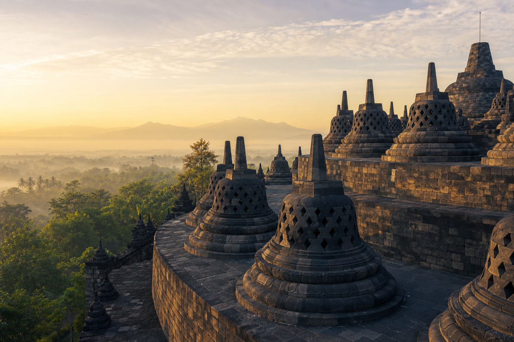
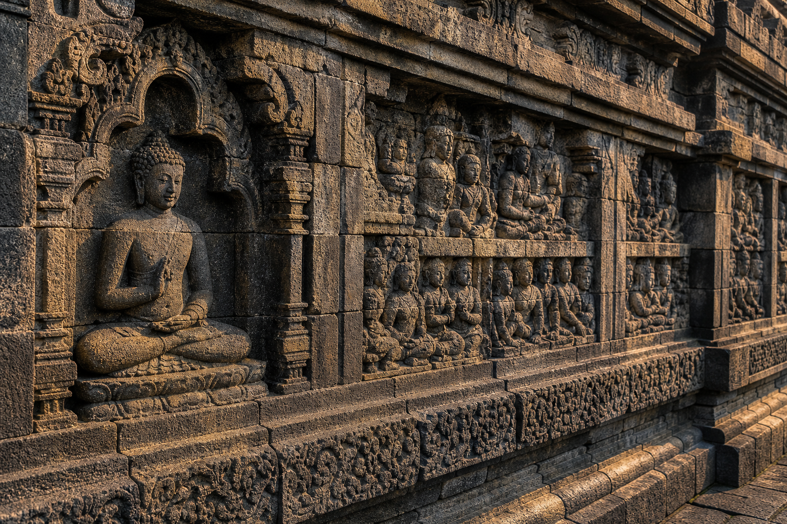
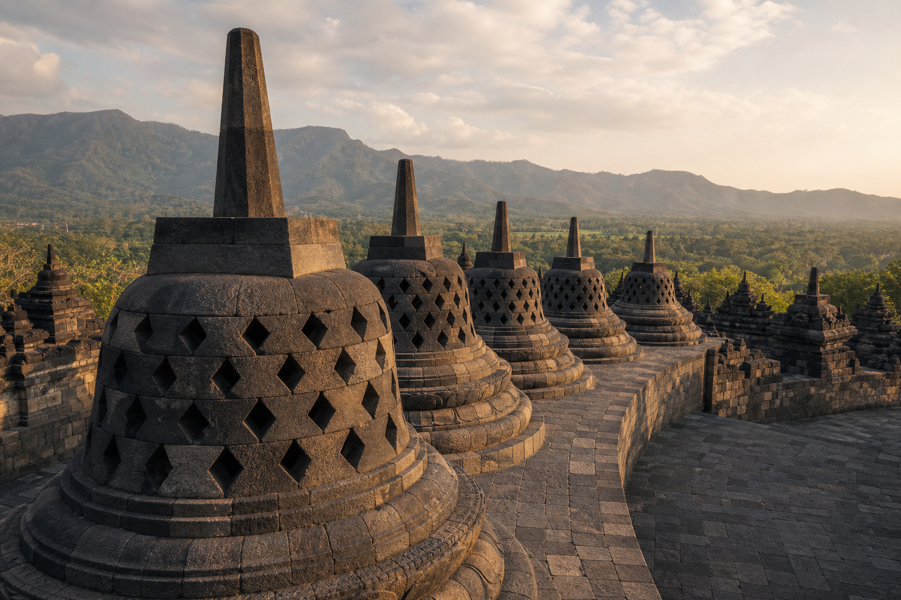

Identitas Bangunan
- Nama
- Candi Borobudur
- Lokasi
- Magelang, Jawa Tengah, Indonesia
- Tahun dibangun
- Sekitar abad ke-8 sampai ke-9 Masehi
- Fungsi awal
- Tempat ibadah dan ziarah umat Buddha

Wisata sejarah Indonesia
Mengenal Candi Borobudur sebagai warisan budaya, pusat pembelajaran, dan tujuan wisata sejarah yang bernilai dunia.
Pelajari SejarahRangkuman Sejarah
Candi Buddha terbesar di Indonesia ini menjadi bukti kemajuan arsitektur, seni pahat, dan kehidupan spiritual masyarakat Jawa kuno.
Borobudur dibangun pada masa Dinasti Syailendra. Susunan bertingkatnya menggambarkan perjalanan spiritual dari dunia keinginan menuju pencerahan. Relief di dinding candi merekam ajaran, kisah, dan kehidupan masyarakat pada masa itu.
Setelah lama tertutup material alam, Borobudur kembali menarik perhatian pada abad ke-19 dan kemudian dipugar secara besar-besaran. Kini, kawasan ini menjadi ruang belajar sejarah, kebudayaan, dan konservasi warisan dunia.
Panel relief menghiasi dinding dan lorong candi.
Arca Buddha berada di berbagai tingkat bangunan.
Diakui sebagai warisan budaya dunia.
Berfungsi sebagai situs wisata, edukasi, dan kegiatan budaya.
Tur Virtual
Pilih spot di bawah peta untuk berpindah sudut pandang Street View Candi Borobudur.
Galeri
Setiap sudut memperlihatkan detail arsitektur, relief, dan suasana kawasan yang memperkaya pengalaman belajar sejarah.
Tampilan utama Borobudur sebagai ikon sejarah Jawa Tengah.

Ukiran naratif yang menyimpan cerita dan ajaran masa lampau.

Bentuk khas yang menjadi penanda visual Candi Borobudur.
Kontak
Gunakan halaman ini sebagai dasar proyek sekolah, panduan wisata, atau materi pengenalan bangunan bersejarah Indonesia.